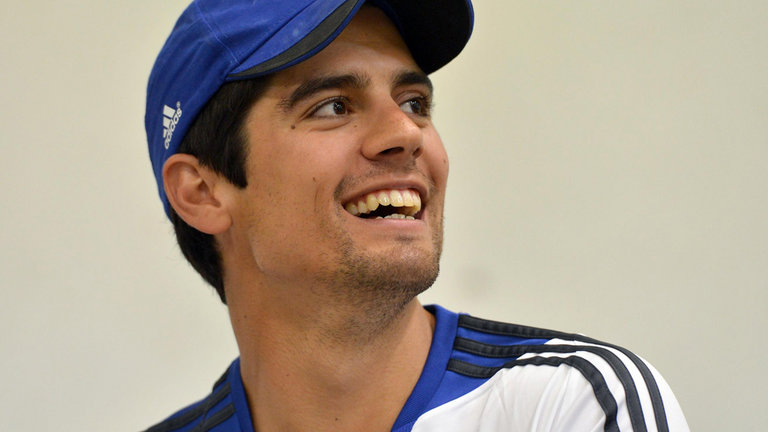

|  |
"It was not like we were expecting England to win. We knew they would come back strongly at us, and for us also it was a new challenge to keep the momentum going after the Lord's win. This Test showed some areas where we have to improve.
"To win Test matches, we need to take 20 wickets. But in this particular game we were not able to take even 10 wickets, and that was a setback to a certain extent. I thought our batsmen played the fast bowlers better, but we allowed Moeen to bowl his line and length. There was considerable amount of wear and tear on the pitch that went his way, and there were a lot of close-in fielders too. I just felt that we could have been a bit more positive against him:Dhoni said"
|